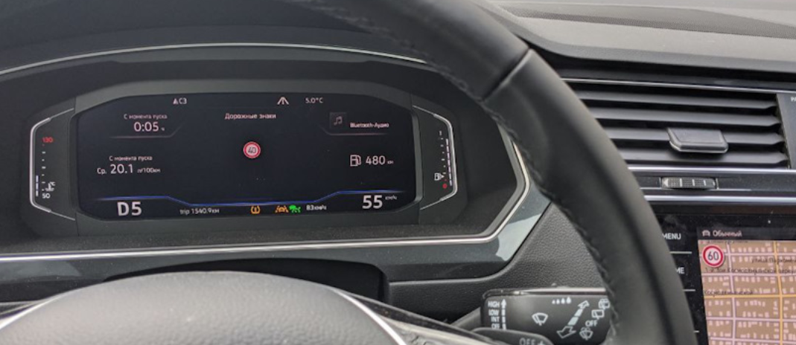

Кодирование 3Q0/3QD* (MFK 2.0) камеры ассистентов¶
Данная инструкция подходит только для камер 3Q0980654
Lane Assist с адаптивным ведением по полосе — адаптивное ведение исключает "пинг-понг" от полосы к полосе.
Опция отличная, позволяет расслабиться за рулем и не вылавливать центр полосы, по трассе просто незаменима.
Traffic Jam Assist — Ассистент движения в пробке.
Это расширение работы Lane Assist для работы с 0 км/ч. В пробке машина подруливает, разгоняется и тормозит сама, без участия водителя. При остановке более 3 секунд для старта нужно нажать RES или нажать педаль газа.
Emergency Assist — Ассистент экстренной остановки.
Если водитель не желает или не может принимать участие в управлении автомобилем, то машина начинает его будить сначала звуком, потом резким схватыванием тормозов,
если и далее человек не принимает управление, то машина сама включает аварийку и останавливается.
Sign Assist — Ассистент распознавания дорожных знаков. Показывает знаки, которые считывает камера.
Прошивка камеры ассистентов¶
Расположены тут: Прошивки и параметрия
Активации ассистентов¶
Матричные фары IQ Light¶
Блок A5 (камера ассистентов) → Кодирование:
AFS_coding_Light_Assist: Matrixbeam
→ Применить
Активация кнопки вызова ассистентов (для 5Q0 953 502 AJ / Valeo 408 876)¶
Блок 16 → Адаптация:
Электроника рулевой колонки
Клавиша вспомогательных систем водителя
Установл.
→ Применить
Активация Lane Assist без адаптивного ведения по полосе¶
Warning
Для активации Lane Assist обновление параметрии для установленной камеры ассистентов не требуется
Включаем отображение Lane Assist на приборной панели
Блок 17 (комбинация приборов/ActiveInfoDisplay) → Кодирование:
Байт 04 – Бит 6 (Lane_assist): Активировать
Байт 11 – Бит 1 (Lane_assist_BAP): Активировать
Конфигурация камеры ассистентов
Можно использовать готовое кодирование:
000307060007040100220044C150890080000E20004000
Блок A5 (камера ассистентов) → Кодирование:
Байт 14 – меняем значение на A0/A1
Байт 16 – Бит 7: Активировать (либо меняем значение байта на 90/98)
Блок A5 (камера ассистентов) → Адаптация:
Lan_assist_system_mode (Состояние включение ассистента движение по полосе) - Selection_over_menu
Lane_assist_warning_intensity (Интенсивность предупреждений ассистента движения по полосе) - Selection_over_menu
Personalization of lane dept. warning Cl. 15 on (Персонализация момента вмешательство при вкл клеммы 15) - Last Setting (последняя настройка)
→ Применить
HCA – Указание блоку рулевого управления о наличии Lane Assist
Блок 44 (усилитель рулевого) → Кодирование:
Байт 01 – Бит 3 (Heading_control_assist): Активировать
→ Применить
Включаем в меню новые функции
Блок 5F (мультимедия) → Адаптация:
Car_Function_List_BAP_Gen2:
- LDW_HCA_0x19: activated
Car_Function_Adaptations_Gen2:
- menu_display_Lane_Departure_Warning: Активировать
- menu_display_Lane_Departure_Warning_over_threshold_high: Активировать
→ Применить
Указание блоку парковочного ассистента о наличии Lane Assist (У кого PLA3.0 12 Датчиков)
В Tiguan 2G 2020 года выпуска PLA3.0 может стоять в системе как 10 блок, а не 76
Блок 76 → Кодирование:
Ассистент движения по полосе, связ. с усилителем рул. управления
Байт 3 – Бит 5 (HeadingControl Unterstutzung Auswahl): Активировать (Spurhalteassistent aktiviert)
→ Применить
Активация полного комплекта: адаптивный Lane Assist, Traffic Jam Assist, Sign Assist¶
Lane Assist с адаптивным ведением по полосе — исключает "пинг-понг" от полосы к полосе.
Опция отличная, позволяет расслабиться за рулем и не вылавливать центр полосы, по трассе просто незаменима.
Warning
Для работы Traffic Jam Assist необходима параметрия для установленной камеры ассистентов.
Расположены тут: Прошивки и параметрия
Указание блоку климата (08), что установлен обогрев камеры.
Блок 08 → Кодирование:
Байт 08 – Бит 0 (Camera heating): Установлено
→ Применить
Блок 08 – Длинное кодирование:
Нагревательный элемент камеры: не установл.→ установл.
Указание радару ACC, что, установлена камера
Блок 13 (адаптивный круиз) → Кодирование:
Байт 03 – Бит 6 (Front_camera): Установлена
→ Применить
Блок 13 → Длинное кодирование:
Front_camera: не установл.→ установл.
Изменение типа ассистента дальнего света с простого на MDF – маскируемый или неослепляющий дальний. Добавляем ассистент в меню
Блок 09 (бортовая сеть) → Адаптация:
Aussenlicht_Blinker:
- Warnblinken_durch_Fahrerassistenz: available
Fernlicht_assistent:
- Erweiterte_Fernlichtsteuerung: AFS, FLA, Fernlicht ueber AFS → AFS, FLA, Fernlicht (GLW,MDF)
- Menuesteuerung Fernlichtassistent: available
- Fernlichtassistent Reset: Деактивировать
- Menuesteuerung Fernlichtassistent Werkseinstellung: available
- Assistance_lighting_sensitivity_adjustable: detected
→ Применить
Включаем отображение Lane Assist и дорожных знаков на приборной панели
Блок 17 (комбинация приборов/ActiveInfoDisplay) → Кодирование:
Байт 04 – Бит 6 (Lane_assist): Активировать
Байт 11 – Бит 1 (Lane_assist_BAP): Активировать (Добавить лайн ассист в меню ассистентов приборной панели)
Байт 05 – Бит 2 (traffic_sign_display): Активировать
→ Применить
Блок 17 → Длинное кодирование:
Ассистент движения по полосе: Нет → Да
Распознавание дорожных знаков: Нет → Да
Ассистент движения по полосе, BAP, путь: Нет → Да
Активация установленных блоков. Нужно добавить A5 (передние датчики вспомогательных систем) и убрать блок 20 (зеркало с камерой FLA)
Блок 19 (гейтвэй) → Адаптация:
Gateway_Component_List: Node_0x30: not_coded
Gateway_Component_List: Node_0x4F: coded
→ Применить
Блок 19 → Адаптация:
Ассистент дальнего света: Не закодир.
Передние датчики вспомогательных систем для водителя: Закодирован
HCA – Указание блоку рулевого управления о наличии Lane Assist
Блок 44 (усилитель рулевого) → Кодирование:
Байт 03 – Бит 0 (Heading_control_assist): Активировать
→ Применить
Блок 44 → Длинное кодирование:
Ассистент движения по полосе: акт.
Настройка блока фар
Внимание!
Изменение кодировок в данном блоке приводит к сбросу базовых настроек фар. Как вернуть базовые настройки?
Блок 4B (многофункциональный модуль) → Кодирование:
Байт 10 – Бит 6 (mdf_activation): Активировать
headlamp_coding_word: 1
multi_function_camera: installed
→ Применить
Блок 4B → кодирование:
headlamp_coding_word: 0 → 1
mdf_activation: не разблокирован → разблокирован
Указание блоку ABS об возможности экстренной остановки
Блок 03 (ABS) → Кодирование:
Байт 29 – Бит 5 (Electromechanical parking brake): активировать (emergenay braking)
→ Применить
Настройка блока 3С (Ассистент смены полосы движения)
Блок 3С → Кодирование:
Lane_Departure_Warning_System:_with_Lane_Departure_Warning_System
Ю Front_Sensors_Driver_Assistance_System:_with_Front_Sensors_Driver_Assistance_System
→ Применить
Указание блоку парковочного ассистента о наличии Lane Assist (У кого PLA 12 Датчиков)
Полезная информация
В Tiguan 2G 2020 года выпуска PLA3.0 может стоять в системе как 10 блок, а не 76
Блок 76 → Кодирование:
Ассистент движения по полосе, связ. с усилителем рул. управления
Байт 3 – Бит 5 (HeadingControl Unterstutzung Auswahl): Активировать (Spurhalteassistent aktiviert)
→ Применить
Включаем в меню новые функции
Блок 5F (мультимедия) → Адаптация:
Car_Function_List_BAP_Gen2:
- LDW_HCA_0x19: Активировать
- traffic_sign_recognition_0x21: Активировать
- traffic_sign_recognition_0x21_msg_bus: CAN_Extended (Дополнительная шина данных)
Car_Function_Adaptations_Gen2:
- menu_display_Lane_Departure_Warning: Активировать
- menu_display_Lane_Departure_Warning_over_threshol d_high: Активировать
- menu_display_road_sign_identification: Активировать
- menu_display_road_sign_identification_over_threshold_high: Активировать
→ Применить
Даем указание блоку проекции (если есть)
Блок 82 → Кодирование:
Road_sign_detection: available
Lane_departure_warning: available
→ Применить
Конфигурация камеры ассистентов.
Готовое кодирование
000307060007040100222346C154890098000E20004000
Для удобства можно воспользоваться калькулятором битов с расшифровкой А5 блока.
Например, готовую кодировку можно Открыть в калькуляторе
Блок A5 (камера ассистентов) → Кодирование:
Brand: VW
Class: A
Generation: Generation_7
Bodystyle: Suv
Expansion: Not_coded
Production_region: EU
Country_variant: Europe
Chassis: Steel_springs
Steering_bar: Not_coded
Windshield: Heat_protecting_glass
Traffic_side: Right_traffic
PSD_Version: PSD_15 # (1)!
Navigation: MIB_High # (2)!
AAG: Coded # (3)!
SWA (Side assist): Coded # (4)!
ACC: Coded
Pedestrian_break: Not_coded
Blind_spot_detection: Not_coded
Rain_light_sensor: Coded
Main_unit: enabled
PLA: Coded # (5)!
ESP: Coded
Personalize_VZE: Not_Coded
Lan_assist_system_mode: Selection_over_menu
Personalized_key: Version_1.x
Networking_variant: MQB
Radar_interface: Coded
Perso_HC: Last_setting # (6)!
Point_of_intervention: early_setting_over_menu
LaneAssist_AGW_output: disabled
Lane_assist_off_text: disabled
Emergency_Assist: EA_Variant_2
Traffic Sign Recognition (TSR/VZE): coded
HC_mob_line: Not_coded
HC: Coded
FCWP_default_on_prewarning: last_mode
FCWP_delivery_status_prewarning: off
FCWP_extended_prewarning_settings: Not_coded
FCWP_warning_indicator: Not_coded
FCWP: Not_coded
FLA_Additional_High_Beam: no_Additional_High_Beam
FLA_Headinglight_type: LED
Mains_frequency: 50_Hz
AFS_coding_Light_Assist: Dynamic_Light_Assist (or Matrixbeam for Tiguan 2021)
HC_LONGPRESS: Not_Coded (only for Audi)
→ Применить
- Прогнозируемые данные по маршруту. Зависит от установленного ГУ (если нет навигации, то
Not coded) - Тип навигации. Зависит от установленного ГУ
- Если установлен фаркоп
- Если установлен контроль слепых зон
- Если установлен Park Assist
- Запоминание выбранного режима при выключении зажигания
Данные адаптации отключают отображение предупреждения о неработающих знаках
Блок A5 (камера ассистентов) → Адаптация:
Road_sign_recognition_fusion_mode (Распознавание дорожных знаков: режим Fusion): Road_Sign_Fusion
Lane_assist_warning_intensity (Интенсивность предупреждений ассистента движения по полосе): Selection_over_menu
Personalisation_point_of_intervention (Персонализация момента вмешательства): Last Setting (последняя настройка)
Adaptation_tsr:
- Par_relevance_mode: enabled
- Par_country_mode: manuel
- Par_country_code_RSR: 205 # (1)!
- Par_country_code_VZF: 205
→ Применить
- Для стран СНГ можно использовать значение от Польши. Список возможных значений:
57 — Чехия
68 — Эстония (50/90/90)
73 — Финляндия
74 — Франция
82 — Германия
118 — Латвия
124 — Литва (50/90/130)
172 — Польша (50/60/90/100/120/140)
173 — Португалия
177 — Румыния
178 — Россия
197 — Испания
205 — Швеция (50/90/110)
BAP Personalization
BAP Personalization — персонализация программирования настроек под каждый ключ в машине. Для автомобилей Tiguan данная опция не задействована — значение ни на что не влияет.
Разделение дорожных знаков¶
Существует возможность добавить на головное устройство отображение дорожных знаков из базы навигации (Sat Nav Speed Limits),
а на AID (Virtual Cockpit) — отображение знаков с камеры ассистентов.

Блок 5F (мультимедия) → Адаптация:
Car_Function_List_BAP_Gen2:
- traffic_sign_recognition_0x21: Деактивировать
→ Применить
Car_Function_Adaptations_Gen2:
- menu_display_road_sign_identification: Деактивировать
- menu_display_road_sign_identification_over_threshold_high: Деактивировать
→ Применить
Блок 5F (мультимедия) → Кодирование:
byte_24_vza: Активировать
Подсветка перекрестков при приближении к ним¶
Топовые MID LED фары умеют активировать боковой свет на перекрестках и сами поворачивать свет еще при приближении к повороту по навигационным данным.
Блок 4B → Кодирование:
psd_data: Активировать
Crossing_light_with_route_data: Активировать — включает боковой свет при приближении к перекрестку
Predictive_afs: Активировать — управляет светом на поворотах по навигационным картам
После этого необходима базовая установка фар!